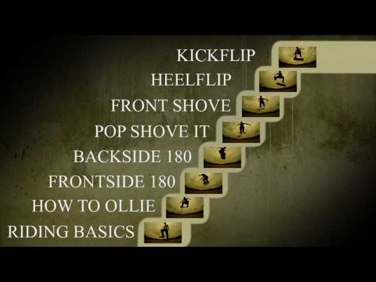

We stellen je voor aan de legendes die de skateboardwereld hebben
gevormd. Denk aan Tony Hawk en Rodney Mullen (beide te zien Hierboven
op de foto), en nog veel meer. We delen hun verhalen en hoe ze de
sport hebben veranderd.
Skate-taal: Ken je Terminologie
Als je wilt deelnemen aan de skateboardgesprekken, moet je de juiste
taal spreken, toch? In deze sectie nemen we je mee door de basis
skateboardterminologie. Van bolts tot grip tape, van goofy tot
regular, je zult snel begrijpen waar we het over hebben.

Skateboard Tricks voor Dummies
En last but not least - skateboardtrucs! We beginnen met de basis,
zoals de ollie, en werken ons omhoog naar de coolste grinds en slides.
We geven je tips en trucs om je vaardigheden te verbeteren, of je nu
een nieuwkomer bent of al behoorlijk kunt shredden.